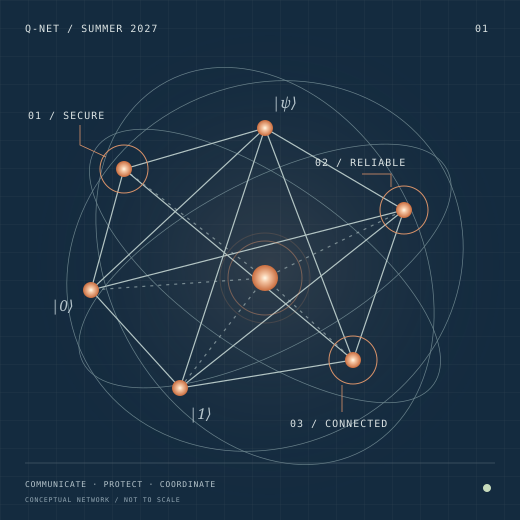

Can quantum information prove where you are?
Investigate how separated adversaries use entanglement and nonlocal computation to challenge location-based authentication.
Qiskit / Quantum circuits
Explore project S3Research Experiences for Undergraduates · Summer 2027
May 24–July 30, 2027 · 10 weeks at Illinois
A summer to ask new questions at the intersection of quantum information, security, and computation.
8 students. Three research thrusts. One connected community.

Three thrusts. Real research questions.
Quantum information is fragile. Networks can be noisy. Trust is never automatic. Work with faculty to turn these challenges into a focused, original research project.
Explore finite-key cryptography, authentication, and the limits of location-based security.
Secure communications THRUST 02Find out how codes and decoders perform when quantum noise is biased, correlated, or imperfectly modeled.
Quantum coding THRUST 03Investigate how local quantum operations can produce shared computations and common states.
Distributed consensusA closer look
Investigate how separated adversaries use entanglement and nonlocal computation to challenge location-based authentication.
Enumerate error patterns to see when different small codes exchange their performance advantage.
Study quantum gossip and interaction rules that bring local qubit states toward a common state.
You belong in the conversation
Bring a foundation in programming, mathematics, physics, or engineering. We’ll build the shared language together.
Discover the summer experiencePre-arrival bridge modules and a quantum bootcamp help you move from your background into a research question.
Faculty and near-peer mentoring connect you to weekly feedback, cross-thrust conversations, and a community of researchers.
Develop a poster, a talk, a short technical paper, and reproducible code or a derivation notebook.
A connected research environment
Campus resources and planned partner activities connect research to the wider quantum community. Explore the partners
Your next research question starts here
No prior quantum coursework required. A summer of research, mentorship, and discovery at Illinois.